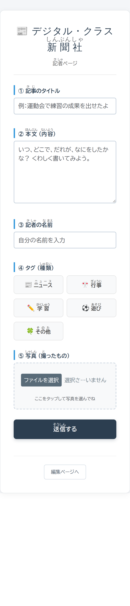
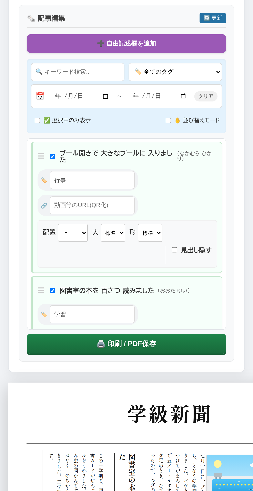
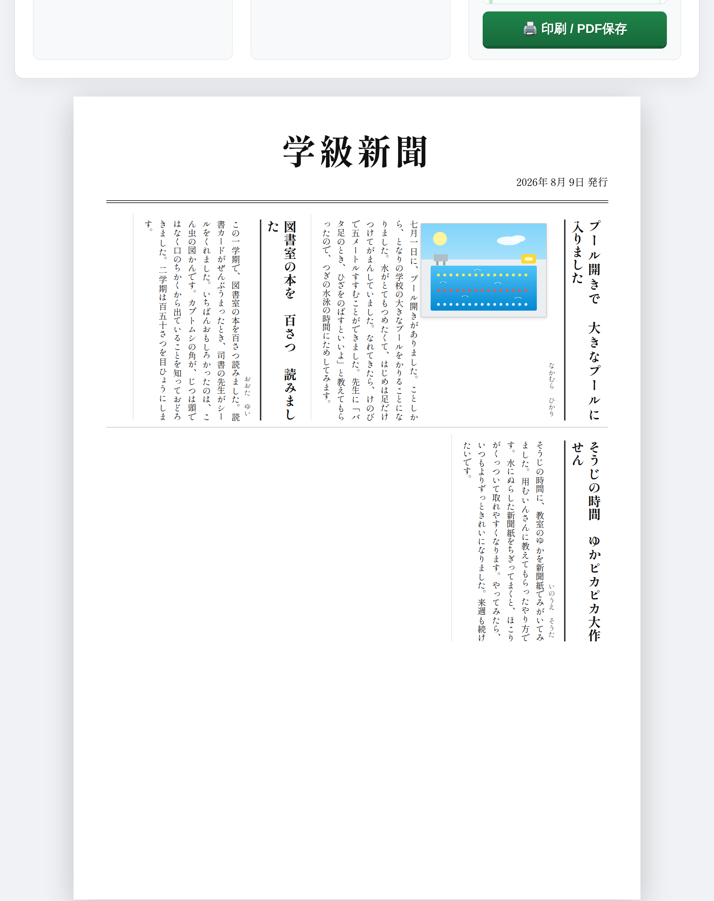

デジタルクラス新聞社
児童がタブレットから記事を送り、先生はチェックを入れて順番を決めるだけ。 A4 一枚の学級新聞が、縦書きの段組みで組み上がります。小学校の教員が作った無償のアプリです。
このページからは、新聞を作れません
このアプリは、先生おひとりずつが、ご自分の Google アカウントで公開して使う形です。 共通の入口はありません。
- 児童のみなさんは、先生から配られた URL を開いてください。このページではありません。
- 先生方は、下の「入れかた」の手順で、ご自分の学級の URL を作ってください。10 分ほどで終わります。
記事も写真も、公開した先生ご自身の Google ドライブの中だけに入ります。 制作者を含め、ほかの誰のところにもデータは行きません。
どんなアプリか
学級新聞を作ろう、と決めたところまではよかった。そのあとが大変だった。そんな覚えはありませんか。 原稿用紙を配って、集めて、画用紙に割り付けて、ハサミで切って、ノリで貼る。 子どもが書いた文章そのものは、とっくにできあがっています。 それを一枚の紙にする作業だけで、放課後がいくつも消えていきます。 このアプリが引き受けるのは、その「割り付けて、貼る」ところだけです。



使うときの流れ
- 先生が URL を配ります。児童は名前とタイトルと本文を入れて送ります。写真も1枚付けられます。
- 先生が編集室を開くと、届いた記事が一覧に並びます。載せたいものにチェックを入れます。
- ドラッグで順番を入れかえ、段の数・文字の大きさ・テーマを選びます。紙面はその場で組み直ります。
- 紙面の上で、新聞名・発行日・見出し・本文をそのまま打ち直します。
- ブラウザの印刷から A4 に刷るか、PDF で保存します。
入れかた
スプレッドシートをコピーして、公開の設定をするだけです。 準備するものは Google アカウント1つ。ふだんお使いの学校のアカウントで構いません。 10分ほどで終わります。
- 上のボタンを押し、「コピーを作成」を選びます。ご自分のドライブにファイルができます。
- できたファイルを開き、上の「拡張機能」＞「Apps Script」を開きます。
- 右上の「デプロイ」＞「新しいデプロイ」＞種類は「ウェブアプリ」。 実行するユーザーは「自分」、アクセスできるユーザーは「同一ドメインの全員」を選んでください。
- スプレッドシートに戻って再読み込みすると、上に「📰 新聞システム」メニューが出ます。 「2. 先生のメールアドレスを設定」で、ご自分のアカウントを登録します。
- 「3. 先生用管理画面を開く」を選ぶと、先生用と児童用の2つの URL が出ます。 児童に配るのは児童用のほうだけです。
コードは、コピーしたファイルの中に入っています。 貼り付ける作業はありません。記事もそのファイルの中に入るので、 どこにできたのかを探す必要もありません。
写真をためるドライブのフォルダは、最初の写真が届いたときに自動で作られます。 場所を決めたいときだけ、メニューの「1. 写真フォルダの設定」で指定してください。
児童に URL を配る前に、先生が先に「2. 先生のメールアドレスを設定」を済ませてください。 登録が済むまで、編集室は誰も開けません（安全側に倒してあります）。 登録したアカウント以外は、URL を知っていても編集室に入れず、 記事一覧を取り出す関数も呼べません。画面を隠すだけでなく、サーバー側で確かめています。
コピーできないときは、貼り付けでも入ります。
学校のポリシーで、外部のファイルのコピーが禁じられていることがあります。
その場合は README の「B. ファイルを貼り付ける」
をご覧ください。Code.gs と post.html と admin.html の3つを
Apps Script に貼る手順で、入るものは同じです。
入れかたの全文は README、 当日の進め方は 操作マニュアル にあります。作った理由と画面ごとの説明は 紹介記事にまとめました。
シートを点検する・直す
コピーしたスプレッドシートを開くと、上のメニューに「📰 新聞システム」が出ます。
- 4. シートを点検する … 中の作りがアプリの想定どおりかを確かめます。何も書き換えません。
- 5. シートを直す … 直せるものだけを、確認を取ってから直します。 直すのは「無いシートを作る」「空のシートに見出しを書く」「見出しの書き方をそろえる」 「足りない列を右端に足す」の4つだけで、列を消したり動かしたりはしません。
記事の読み書きは見出しの名前で行います。列を並べ替えても動きますし、 メモ用の列を右に足していただいても構いません。 ただし見出しの行（1行目）を消すと、どの列が何なのか分からなくなります。 消してしまったときは点検メニューがその旨を伝えるので、1行目に行を挿して見出しを戻してください （データが動く操作なので、アプリは自動では直しません）。
情報担当の先生へ
| 項目 | このアプリの場合 |
|---|---|
| フィルタリングで通すもの | アプリ本体が置かれる script.google.com と、
紙面に写真を出すための drive.google.com です。
見た目のために書体（Google Fonts）と unpkg.com の CSS を読みますが、
どちらも届かなくても入力・送信・印刷はできます（実際に塞いだ状態で確かめています）。 |
| 外から読み込む実行コード | 0 バイトです。QR コードを作る部品はアプリの中に持っています。 以前は外部から読んでいて、塞がれると「枠は見えているのに中身が空の QR」が紙に刷られていました。 |
| データの置き場所 | 公開した先生ご自身のスプレッドシート1つと、ドライブのフォルダ1つだけ。 外部のサービスへは何も送りません。制作者もデータを見られません。 |
| 児童のアカウント権限 | サーバー側の処理は「デプロイした先生」として動きます。 児童は先生のスプレッドシートにもドライブにもアクセス権が要りません。 児童から見えるのは投稿画面だけです。 |
| 写真の公開範囲 | まず校内ドメイン内でリンクを知っている人だけに限定します。 Google Workspace 以外のアカウントではその設定ができないため、その場合は非公開まで閉じ、 登録済みの先生にだけ閲覧権を渡します。どちらになったかは実行ログに残ります。 |
| 編集室に入れる人 | メニューで登録したメールアドレスだけです。 画面を隠すのではなく、サーバー側の関数ごとに確かめています。 未登録のうちは誰も入れません。 |
| 要求する権限 | このスプレッドシート、このアプリが作ったドライブのファイル、 スプレッドシートのメニュー、デプロイ URL の取得、メールアドレスの5つです。 ドライブ全体を読む権限は要求しません。 |
| 費用・アカウント登録 | どちらもありません。MIT ライセンスで公開しています。 |
できないこと
正直に書いておきます。
- 紙面は A4 一枚ぶんだけです。枠からはみ出した記事は、画面にも印刷にも出ません。 段数・文字サイズ・写真の大きさで収めてください。
- 承認の仕組みはありません。届いた記事は編集室にすべて出ます。 載せるかどうかはチェックで決まります。「不適切な記事が届かない」わけではありません。
- 紙面の上で直した文章は、スプレッドシートに戻りません。 「一時保存」しておかないと、再読み込みで消えます。
- 児童が自分の記事をあとから直したり消したりする画面はありません。 紙面を組んでいる最中に元の文章が変わるのを避けるためです。直しは先生が紙面の上で行います。
- 記事を削除する機能はありません。消すにはスプレッドシートの行を直接消します。
- オフラインでは動きません。
script.google.comに接続できないと開けません。 - キーワード検索が見るのはタイトルと記者名だけで、本文は対象にしません。